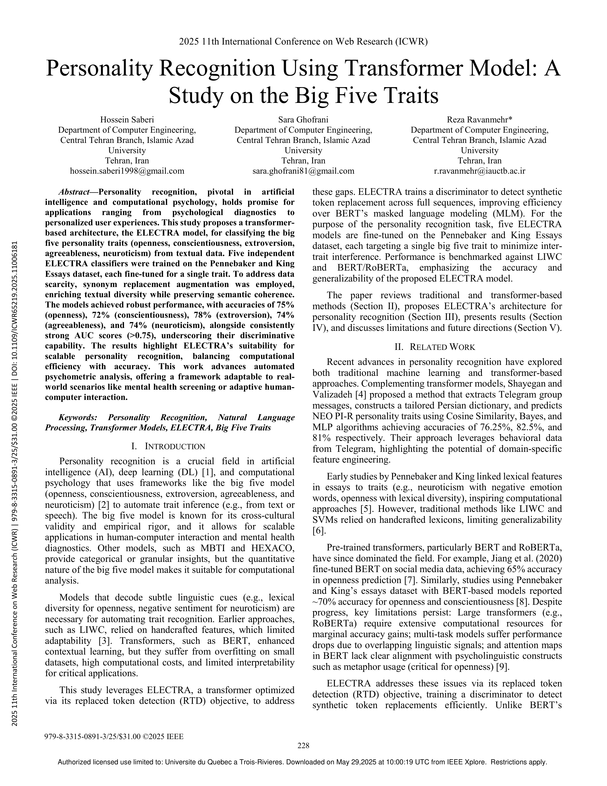

Introduction
Peut-on prédire les traits de personnalité d’une personne simplement à partir d’un texte qu’elle a écrit? Cette question, qui pourrait sembler tirée d’un film de science-fiction, est aujourd’hui au cœur de recherches sérieuses en psychologie computationnelle. J’ai récemment lu une étude fascinante présentée à la conférence IEEE ICWR 2025, qui explore cette idée à l’aide d’un modèle d’intelligence artificielle appelé ELECTRA, une version moderne des modèles transformers.
Dans ce billet, je présente l’article en question ainsi que la technologie d’intelligence artificielle qui permet d’analyser les textes pour en extraire des indices de personnalité.
Un peu de contexte : les traits de personnalité
Dans cet article, les auteurs cherchent à prédire les traits de personnalité en fonction du modèle des Big Five ou « cinq grands facteurs » de la personnalité. Ce modèle propose cinq traits fondamentaux :
- Ouverture à l’expérience : imagination, curiosité, créativité
- Consciencieux : organisation, rigueur, discipline
- Extraversion : sociabilité, expressivité, dynamisme
- Agréabilité : bienveillance, coopération, empathie
- Névrosisme : tendance à l’anxiété, la colère ou la tristesse
Dans la recherche, on tente souvent de relier ces traits à la manière dont une personne parle ou écrit. Par exemple, quelqu’un de très extraverti pourrait utiliser plus de mots liés à l’émotion ou à la première personne (« je », « moi »), tandis qu’une personne très névrosée pourrait employer davantage de mots à connotation négative.
Avant les transformers : premières tentatives d’analyse de la personnalité à partir du texte
Des approches symboliques fondées sur les mots
Avant l’essor de l’apprentissage profond, les chercheur·es ont tenté d’utiliser des approches plus classiques de l’intelligence artificielle pour analyser le lien entre langage et personnalité. Ces méthodes — souvent fondées sur des règles simples ou des statistiques — représentent les premiers pas de l’IA appliquée à la psychologie du langage. Même si elles étaient moins performantes que les approches modernes, elles ont posé les bases de ce champ en plein essor : faire parler les textes pour mieux comprendre qui les écrit.
Les premières tentatives pour relier le langage écrit aux traits de personnalité ont reposé sur des approches dites symboliques ou statistiques. L’une des plus connues est l’utilisation de LIWC (Linguistic Inquiry and Word Count), un outil qui scanne un texte et compte la fréquence de certains types de mots, comme ceux associés à la colère, à la famille, aux émotions positives ou négatives. En analysant ces fréquences, les chercheur·es pouvaient établir des liens avec des traits de personnalité. Par exemple, une personne utilisant souvent des mots chargés d’émotion positive pouvait être perçue comme plus extravertie, alors qu’un vocabulaire plus anxiogène était fréquemment associé au névrosisme.
Des modèles statistiques plus flexibles
En parallèle, des méthodes plus statistiques se sont développées. Des modèles comme les forêts aléatoires, les réseaux de neurones artificiels simples ou les SVM (support vector machines) ont été utilisés pour prédire les traits de personnalité à partir de caractéristiques linguistiques extraites manuellement. Ces caractéristiques incluaient, par exemple, le nombre de phrases, la longueur moyenne des mots, la fréquence d’utilisation de certains temps verbaux, ou encore la proportion de pronoms personnels. Ces approches, bien que plus souples que les analyses par mots-clés, restaient fortement dépendantes des choix faits par les chercheurs en amont : il fallait définir quoi mesurer, et comment.
Les limites de ces approches
Cependant, ces premières méthodes présentaient plusieurs limites importantes. D’abord, elles s’appuyaient sur de nombreuses hypothèses implicites : il fallait deviner à l’avance quels éléments du langage pourraient être liés à la personnalité. Ensuite, elles étaient peu sensibles au contexte. Un mot comme « froid », par exemple, n’aura pas le même sens selon qu’il décrit la météo ou une relation humaine. Ces modèles peinaient donc à saisir les subtilités du langage naturel. Enfin, leurs performances plafonnaient souvent autour de 65 à 70 % de précision, ce qui limitait leur utilité dans des contextes plus complexes ou variés. C’est précisément pour dépasser ces limites que les chercheurs se sont tournés vers des approches plus flexibles et puissantes, comme celles fondées sur le deep learning. Parmi elles, les modèles transformers marquent une avancée majeure.
Comprendre les modèles transformers
Avec l’émergence du deep learning, un nouveau type de modèle s’est imposé dans le domaine de la compréhension du langage naturel : le transformer. Introduit en 2017, ce type de modèle a profondément modifié la manière dont les machines analysent les textes, en offrant une capacité inédite à capturer les relations entre les mots, quelle que soit leur position dans la phrase. Contrairement aux anciens modèles qui lisaient les phrases de façon linéaire (mot après mot), les transformers analysent l’ensemble des mots simultanément.
Pour comprendre cela de façon simple, imaginez que vous lisiez une lettre. Le mot « chaud » n’aura pas le même sens dans « une boisson chaude » ou dans « une ambiance chaude ». Le sens dépend des mots qui l’entourent. Les transformers fonctionnent justement sur ce principe : ils accordent à chaque mot une importance différente selon le contexte. Ce mécanisme s’appelle ’attention, et c’est ce qui permet au modèle de repérer quelles parties du texte sont les plus pertinentes pour comprendre un mot donné.
Dans l’étude que je présente ici, les chercheur·es ont utilisé un modèle transformer appelé ELECTRA. Ce modèle est un peu particulier : pour s’entraîner, il joue à un jeu où certains mots du texte sont remplacés par d’autres, et le modèle doit deviner quels mots sont “faux”. Cela l’oblige à comprendre finement la structure et le sens des phrases. Une fois ce modèle pré-entraîné, il peut être spécialisé pour des tâches précises, comme ici, prédire les traits de personnalité à partir de courts textes.
Ce qui rend ELECTRA particulièrement intéressant, c’est qu’il est plus rapide et plus léger que ses prédécesseurs, tout en maintenant une très bonne précision. De plus, il s’agit d’un modèle open-source, ce qui signifie que toute personne intéressée – chercheur·e, praticien·ne ou étudiant·e – peut librement le consulter, l’utiliser ou l’adapter. Il est accessible sur des plateformes comme Hugging Face, favorisant ainsi la démocratisation de l’intelligence artificielle en recherche psychologique. Il est donc adapté à des tâches comme l’analyse psychologique automatisée, où l’on dispose souvent de quantités modérées de données et où l’interprétabilité est essentielle.
Les résultats
Les modèles ont obtenu de très bons résultats, surpassant les performances d’anciennes approches comme l’analyse lexicale manuelle. Chaque dimension de la personnalité a été considérée indépendamment comme une tâche de classification binaire (par exemple, distinguer un haut d’un bas niveau d’extraversion), avec une évaluation basée sur plusieurs métriques : précision, rappel, score F1 et AUC (aire sous la courbe ROC).
Pour l’extraversion, le modèle a obtenu une précision de 78 %, avec une AUC remarquable de 0.84. Cela indique qu’il distingue bien les personnes extraverties des introverties, en captant des indices comme l’usage fréquent de la première personne, l’expressivité et les émotions positives.
Pour l’ouverture à l’expérience, la performance atteint 75 %. Le modèle semble particulièrement sensible à la richesse lexicale, à la présence de mots abstraits ou à l’usage de tournures stylistiques variées, souvent associées à ce trait.
Concernant l’agréabilité, le modèle atteint également 74 % de précision, avec une AUC solide. Il semble repérer des expressions de politesse, des tournures conciliantes et un ton globalement prosocial.
Pour le névrosisme, le score de 74 % reflète une bonne capacité à détecter les marqueurs de tension émotionnelle, comme les mots associés à l’inquiétude, au doute ou à la frustration.
Enfin, la conscienciosité est le trait où le modèle obtient la précision la plus faible (72 %), mais tout de même supérieure aux standards classiques. Ce trait semble plus difficile à inférer à partir de textes courts, car il repose sur des indices moins saillants, comme la structure syntaxique, la régularité ou l’organisation du discours.
Ces résultats sont d’autant plus notables que les textes analysés sont brefs, spontanés, et écrits dans un cadre non contraint. La capacité du modèle à extraire de tels signaux à partir d’un matériau aussi variable illustre la puissance de cette approche.
Pourquoi c’est prometteur pour la psychologie
1. Un outil précieux pour la recherche
Les chercheur·es en psychologie manipulent souvent de grandes quantités de textes — que ce soit des réponses ouvertes à des questionnaires, des journaux personnels, ou des messages sur des forums en ligne. Analyser tout cela manuellement peut prendre des semaines. Grâce à des modèles comme ELECTRA, on peut obtenir une première lecture automatisée de ces textes : le modèle identifie les tournures, les mots ou les styles d’écriture qui pourraient être liés à certains traits de personnalité. Cela permet de gagner du temps, d’élargir le champ des études, et de formuler de nouvelles hypothèses à partir de données linguistiques qu’on aurait autrement négligées.
2. Un soutien pour les pratiques cliniques et communautaires
Dans des contextes comme la clinique, l’intervention communautaire ou même l’éducation, il est souvent utile de comprendre rapidement le vécu ou le profil d’une personne, surtout quand le contact est bref ou se fait en ligne. Un outil comme ELECTRA pourrait, par exemple, analyser de manière discrète les premières réponses écrites d’une personne sur une plateforme de soutien ou dans un formulaire d’accueil. Il pourrait ainsi suggérer certains indicateurs linguistiques liés à l’anxiété, à l’agréabilité ou à l’ouverture d’esprit, ce qui permettrait aux intervenant·es d’adapter leur approche. Cela ne remplace pas le jugement professionnel, mais cela peut offrir un regard complémentaire, plus subtil, pour guider la relation d’aide.
3. Vers des technologies plus sensibles aux personnes
Cette technologie pourrait aussi transformer les interfaces numériques elles-mêmes. Imaginez un agent conversationnel (chatbot) qui ajuste son style de réponse selon la personnalité perçue de la personne avec qui il échange : plus chaleureux, plus structuré, plus créatif… Un tel ajustement pourrait rendre les interactions plus naturelles et plus humaines. C’est une façon de concevoir l’IA non pas comme un outil froid et distant, mais comme un allié dans la création de liens, capable de mieux comprendre et de mieux s’adapter aux personnes.
Et les limites?
Évidemment, tout n’est pas parfait :
- L’algorithme fonctionne surtout sur des textes en anglais, écrits par une population assez homogène.
- Il ne prend en compte que le texte, pas le ton de la voix, le contexte, ni les émotions ressenties.
- Le modèle peut surapprendre à ses exemples, ce qui limite parfois sa généralisation.
Mais ces défis sont connus, et les auteur·es proposent plusieurs pistes pour y remédier (données plus variées, données multimodales, etc.).
L’article complet est disponible ici : Saberi, H., Ghofrani, S., & Ravanmehr, R. (2025). Personality Recognition Using Transformer Model: A Study on the Big Five Traits. IEEE ICWR. 🔗 Accès via IEEE Xplore
Comment l’étude a été réalisée
Les chercheur·es ont utilisé une base de données appelée Pennebaker and King Essays. On y trouve 2 467 petits textes écrits librement par des adultes, souvent sous forme de récits introspectifs ou de réflexions personnelles. Chacun de ces textes est accompagné d’un profil de personnalité établi par questionnaire, basé sur le modèle des Big Five.
Voici comment ils ont procédé :
Prétraitement : Les textes bruts ont d’abord été nettoyés pour les rendre exploitables par le modèle. Cela inclut la suppression de caractères non alphabétiques, la normalisation des espaces et ponctuations, et la mise en forme uniforme des textes. Un seuil de longueur a également été fixé pour limiter la variabilité et standardiser l’entrée dans le modèle.
Augmentation : Pour compenser la taille relativement modeste du corpus, les chercheur·es ont eu recours à une technique d’augmentation de données. Celle-ci consiste à remplacer certains mots par des synonymes pertinents, extraits de WordNet, de manière aléatoire mais contrôlée (jusqu’à deux remplacements par phrase). Cela permet d’augmenter la diversité lexicale tout en conservant le sens général du texte, ce qui améliore la robustesse du modèle lors de la généralisation à de nouveaux échantillons.
Entraînement : Cinq modèles ELECTRA distincts ont été entraînés, chacun dédié à la prédiction d’un des cinq traits de personnalité. En procédant ainsi, les auteur·es ont évité les interférences possibles entre traits (par exemple entre agréabilité et consciencieux) et ont permis au modèle d’apprendre des représentations linguistiques spécifiques à chaque dimension. L’entraînement a été réalisé en utilisant un algorithme d’optimisation de type AdamW, avec une stratégie de régularisation pour éviter le surapprentissage.
Évaluation : Les performances des modèles ont été mesurées à l’aide d’un découpage standard des données en ensembles d’entraînement, de validation et de test. Plusieurs métriques ont été utilisées : précision, rappel, score F1 et AUC (aire sous la courbe ROC). Ces indicateurs ont permis de s’assurer que les modèles ne se contentaient pas de bien performer sur les données apprises, mais étaient capables de généraliser sur de nouveaux textes.